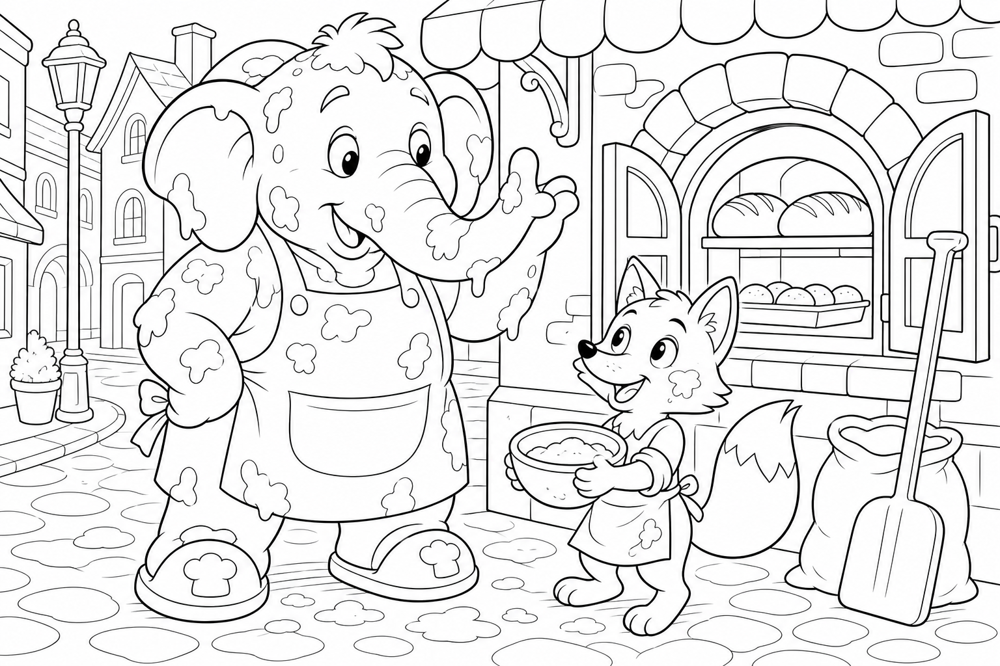

Cerca questa immagine in fondo al libro per colorarla come preferisci. Ricorda: la farina bianca sulla proboscide e i filoni dorati del forno.
C'era una volta un Elefante di nome Franco, che gli amici chiamavano ... EleFranco. Di cognome faceva Franchini. Abitava nella sua accogliente casa nel paesino di FrancaVilla, un borgo profumato di lievito e legna arsa, dove i tetti avevano comignoli a forma di spiga, le finestre della panetteria si appannavano di vapore dolce al mattino e ogni vicolo sembrava uscire da un libro di ricette illustrate.
Era un mattino di sole tiepido e EleFranco aveva una fame da lupi: «Devo andare subito da Berto il Fornaio a prendere un filone integrale croccante, prima che spenga il fuoco del forno!» Controllò la dispensa: solo briciole. «Senza pane, la colazione non è colazione.» Si infilò le sue ciabatte giganti da fornaio, con la suola antiscivolo color cannella, prese un canovaccio pulito e uscì di casa.
Lungo la strada del profumo il selciato tremava piano: THUMP THUMP THUMP Arrivato all'angolo del forno a legna, vide una nuvoletta bianca che usciva da terra e, in mezzo, una volpe rossa con il muso imbiancato e le zampe che scivolavano come su pattini. Era Nora la Volpe, vivace e onesta, ma quella mattina era al limite delle lacrime. «EleFranco, che disastro!» gemette. «Portavo a casa il sacco di farina del mulino e — CRAC! — si è rotto sul bordo del marciapiede!
Ora la strada è un campo di neve farinosa, scivolo a ogni passo e il fornaio Berto sta per aprire: se vede tutto questo casino, penserà che l'ho fatto apposta!» EleFranco posò il canovaccio e guardò la strada bianca. Poi guardò il forno fumante. Poi di nuovo la farina.
«Non ti preoccupare, Nora. Insieme sistemiamo tutto.» Ma mentre cominciava a radunare la farina con la proboscide, la mente cominciò a vagare: pensò al filone caldo, al burro che si scioglie, a quante fette avrebbe tagliato — spesse o sottili? — e se avrebbe messo anche un po' di miele. Stava quasi per perdere il controllo quando Nora gridò: «EleFranco, sto scivolando verso il canale!»
Allora l'elefante scosse le grandi orecchie e disse ad alta voce la sua parola magica: "FOCUS!"«Piano, Nora. La farina non ha fretta: noi sì, ma con calma.» Cominciò a spazzare con movimenti circolari, riunendo la polvere in piccoli mucchietti ordinati. Nora, appoggiata al muro, gli passava una pala di legno e incoraggiava: «Bravo!
Ancora un po' a sinistra!» Ma EleFranco, entusiasta del progresso, diede un soffio per spazzare via l'ultimo velo di farina dal marciapiede. Fu un soffio troppo generoso: una nuvola bianca esplose verso l'alto, coprendo l'elefante da capo a piedi, imbiancando le finestre del forno e depositando uno strato finissimo su tutta la piazzetta. EleFranco starnutì.
«ETCIÙ! Ops... ora sembro un pandoro ambulante.» Nora si tappò la bocca per non ridere, poi si fece seria: «E il fornaio sta aprendo il cancello!» Proprio in quel momento, Berto il Fornaio spinse la porta del forno e uscì con un grembiule infarinato e un sorriso largo.
Vide la scena — l'elefante bianco, la volpe rossa, la strada quasi pulita — e invece di arrabbiarsi alzò le sopracciglia per la sorpresa. «Ma che magia è questa?» mormorò, guardando i tavoli dove l'impasto era appena steso. La corrente calda uscita dal forno aveva incontrato la farina umida caduta per caso sui pani in lievitazione: si era formata una crosta dorata, uniforme e splendente, come se un artista avesse spolverato oro commestibile su ogni filone. «Non l'ho mai ottenuta così perfetta!» esclamò Berto.
«EleFranco, Nora, siete due geni del pane!» Nora arrossì sotto la farina. «Noi volevamo solo ripulire...» Berto rise e riempì un cesto di filoni caldi, croccanti fuori e morbidi dentro.
Ne pose uno nelle zampe di Nora con un sacco di farina nuovo legato con un fiocco arancione. «Per la volpe onesta che non è scappata dal pasticcio.» Poi porse il cesto a EleFranco. «E per l'elefante che ha trasformato un disastro in colazione.»
La missione era compiuta senza nemmeno entrare in coda: il pane era lì, profumato e gratis, e la strada era di nuovo sicura. EleFranco si stropicciò il ciuffo bianco, guardò Nora che salutava felice e alzò la proboscide al cielo azzurro del mattino.
EleFranco capì allora la morale di quella giornata: L'ordine nasce con calma, non con fretta. 🧹
Scoppiò nella sua famosa risata: OH... OH... OH...